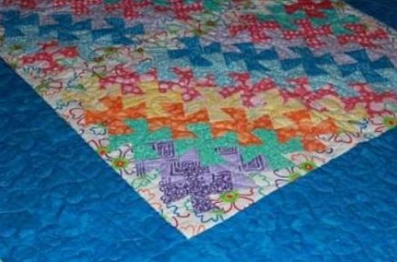

What colors are available for threads?
I have a wide selection of Glide threads. You can choose a blending or contrasting shade.

Should I bring my own badding/thread/materials?
The only things you need to bring are your quilt bottom, quilt top and yourself. If you have a preference please call us to see if that is something that can be accomodated
How long will it take?
It’s important to have your quilt back in your hands as soon as possible. Often you will have your quilt back in a number of days.
How much does it cost?
Edge to edge designs range from $0.02-$0.04 per square, contact us for more details.
Are there any materials you cannot use on your machine?
Fabrics like leather or really any material that stretches easily may damage the machine or ruin your hard work. Leather is too tough for the needles I have and stretchy materials may be difficult to work with. If you are unsure if it's too stretchy, please reach out to us for confirmation so we can give you a direct answer.
Do you have badding?
Yes I have bleached, natural and black hobbs 80/20 batting as well as silk, bamboo and cotton badding. Please contact us for more details.
Do you bind quilts?
Yes, if that is something you’d like please contact us for more details.
How can I contact you?
See the bottom of the page in the blue portion where it says “contact us.”